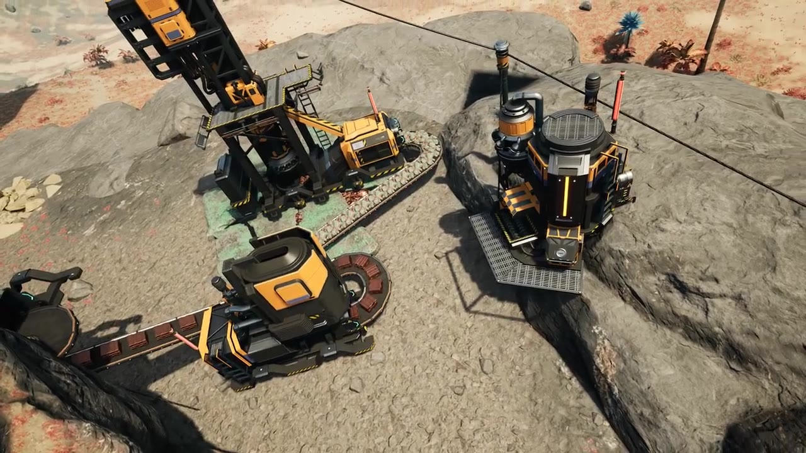
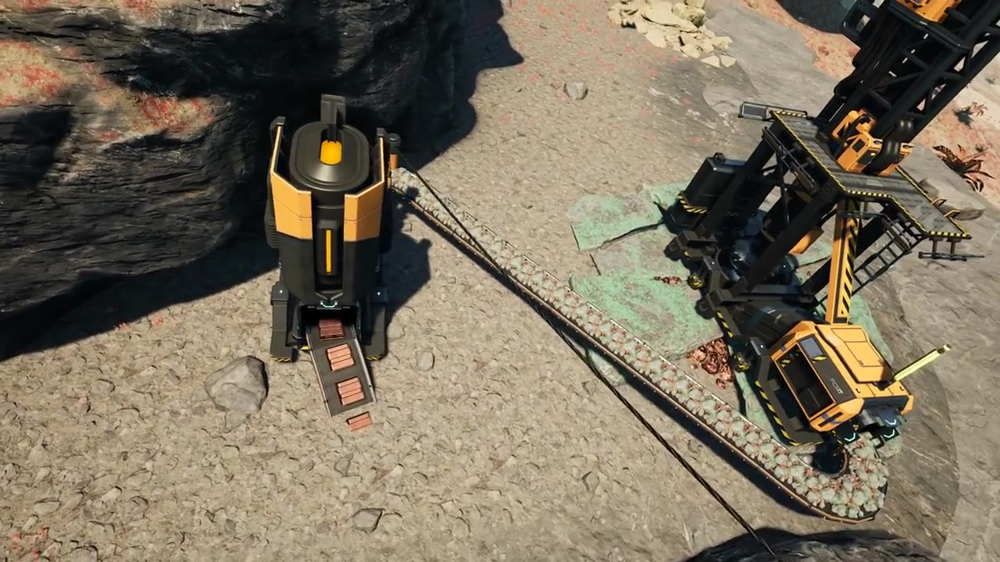

Claude Opus 5.5 milestone 2-1 · Part Assembly
· Earned, the first tier 2 milestone a model has earned, with declared hand help.
 Play the film (73 seconds, silent)
Play the film (73 seconds, silent)
Work SaveBench
SaveBench · AI factory designSaveBench asks whether an AI can build a working factory in the game Satisfactory, by the game's own rules, with the running game as the judge. It began with AI models designing factories that the game then measured. A factory that only works on paper doesn't count.
The game unlocks buildings in tiers, and each tier has numbered milestones: 1-1 is tier 1, milestone 1. You earn a milestone by handing in the parts it costs, and the game itself accepts the payment, so the game is the judge.
Recorded experiment · game runs from September 9 to November 17, 2026 · see the record
Newest: watch the factory Claude Opus 5.5 built for milestone 2-1 (Part Assembly), the first tier 2 milestone a model has earned
![Scoreboard, state on November 18, 2026. Script, reference run, not an AI: Nov 14: Milestone 1-1 earned with every part from miners by belt; Nov 16: Milestone 1-2 earned the same way, then both again in one world; Nov 17: Milestone 1-3 earned in that same world: all of tier 1 in one factory. Milestones from miners and belts: 3. AI models, choosing every step themselves: Nov 16 and 17: Claude Opus 5.5: milestones 1-1 and 1-2, every part made by machines; Nov 17: Claude Opus 5.5: 1-3, then 2-1, the first tier 2 milestone. Both with declared hand help; Nov 17: GPT-6.1 Sol: milestones 1-1 and 1-2. Its try at 1-3 ran out of time. Different milestones: 4 (Opus 4, Sol 2). Banner: Script: tier 1 in one world. Claude Opus 5.5 to 2-1 with hand help. GPT-6.1 Sol to 1-2.](../../assets/savebench/walkthrough/current-frame.jpg)
A short animation of what the game has accepted so far, redrawn when the results change.

The animation needs JavaScript. Its transcript, and every earlier version, are in the archive.
Earlier versions of this video, every transcript and the results logged day by day are in the archive.
Each run started from an empty world, and the model chose every move itself. Each has a game camera film of its factory and a page that replays the run from its record, one reply at a time.
See Claude Opus 5.5 and GPT-6.1 Sol head to head, milestone by milestone
· Earned, the first tier 2 milestone a model has earned, with declared hand help.
Play the film (73 seconds, silent)
· Not earned. Its hour ran out with 140 of the 300 Screws made.
 Play the film (72 seconds, silent)
Play the film (72 seconds, silent)
· Earned, with declared hand help: it made 72 Iron Plate at the bench before paying.

Play the film (65 seconds, silent)· Earned. No machine was fed by hand.

Play the film (72 seconds, silent)· Earned. No machine was fed by hand.
 Play the film (80 seconds, silent)
Play the film (80 seconds, silent)
· Earned. No machine was fed by hand.
 Play the film (72 seconds, silent)
Play the film (72 seconds, silent)
· Earned, the first milestone an AI model earned. No machine was fed by hand.
 Play the film (72 seconds, silent)
Play the film (72 seconds, silent)
These factories work, but they are not laid out as a player would lay them out. The test's building tool put some machines on rocks and cliff faces, in places tens of metres above or below the machine next to them, and it did not tell the model the height it had built at. The game accepted the belts and they carried the parts. Four of the films are shortened cuts that leave out seconds where the camera passed through rock, showed only a cliff face or stayed close on the ground.
A milestone counts only when the running game accepts the payment. Each run starts from an empty world.
Ore comes from miners, parts move between machines by belt, and hands are only for getting started. Hand steps are declared beside the result.
A run that falls short is kept and shown, like GPT-6.1 Sol's try at milestone 1-3.
A script, a fixed list of steps written in advance, is the reference run. It is never counted as an AI.
SaveBench began in September with AI models designing factories that the game then measured. When the rules rewarded the wrong thing, the test changed, and it became a ladder of the game's own milestones that an AI plays from an empty world. How the test changed, step by step.
From the archive: the September prototype's real controls on made-up sample data. Look at the criteria, start the preview, step through its events, go back to an earlier revision, then compare the latest designs. 33 seconds.
I decide what each project is for and check what comes back. I want AI models to design factories and the game itself to judge them. The September 18 call on what SaveBench measures was mine.
AI tools write the code: the prototype's interface, the part that writes designs into save files, the evaluator and the tests. AI contestants designed the factories judged here. The save-file work uses Satisfactory Agent Tools by petehunt, a fork of GreyHak's sat_sav_parse, both GPL-3.0.
An independent hobby project, not affiliated with or endorsed by Coffee Stain Studios. Satisfactory and its artwork belong to their owners.